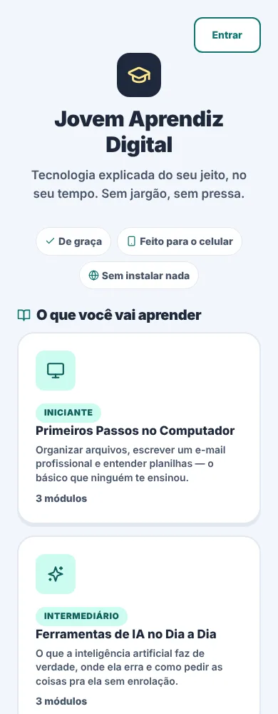
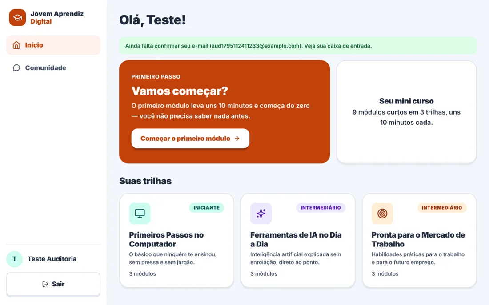
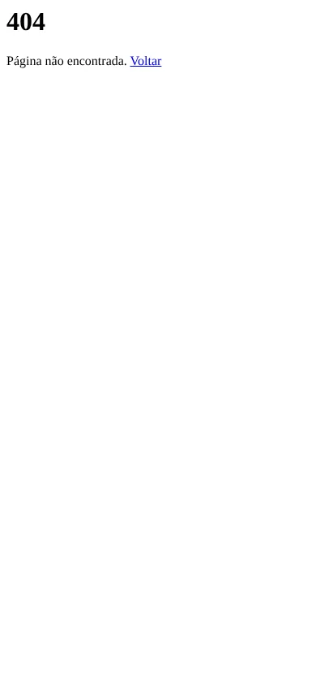
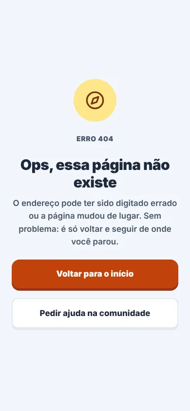
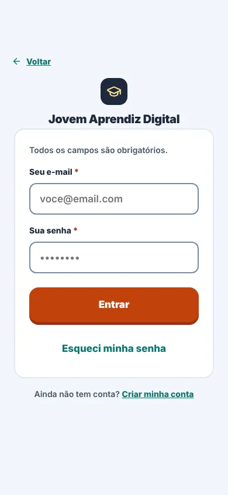
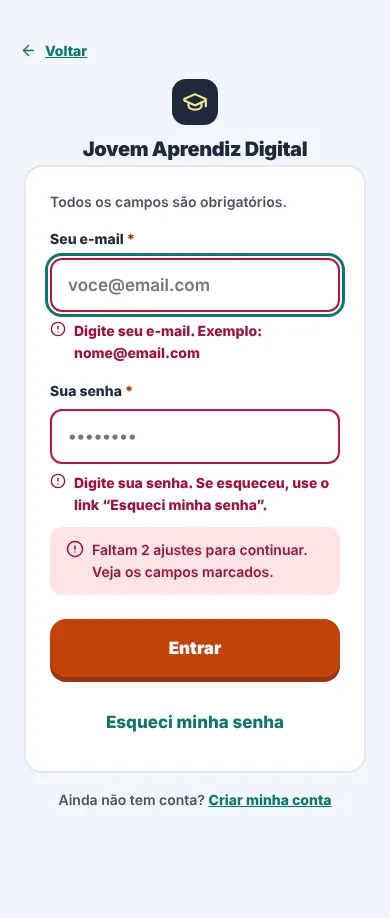
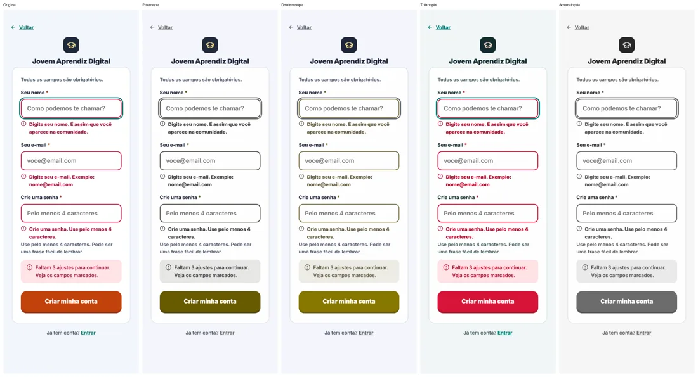

Jovem Aprendiz Digital
Portfólio de UX: o que mudou, como foi medido e o que falta testar com pessoas.
Samuel · 26/11/2026
O problema
- Jovens aprendizes de Maceió (14 a 19 anos) usam bem o celular, mas têm pouca experiência com computador, e-mail profissional e planilhas.
- É justamente o que o trabalho pede no primeiro dia.
- Persona da 1ª AV: Maria Alice, 16 anos, aprendiz em Maceió.


A solução
- 3 trilhas, 9 módulos curtos (uns 10 minutos cada) com atividade de fixação.
- Comunidade com respostas, recuperação de senha e confirmação de e-mail.
- Linguagem simples, visual lúdico, no celular e no computador.
- Sem sequência diária (ofensiva): o conteúdo é finito.
Acessibilidade em números (WCAG 2.1 AA)
10 → 0violações no axe-core
1,23 → 3,47contraste da borda dos campos (mín. 3:1)
0alvos de toque abaixo de 44 px
14 de 14testes dos formulários
Ferramenta automática não viu a borda fraca: só a medição à parte mostrou.
Antes e depois




Erro que explica e não depende de cor
- Erro logo abaixo do campo, com ícone e texto que dizem como resolver.
aria-invalidearia-describedby; o foco vai ao primeiro campo com problema.- Simulação de daltonismo em 4 telas: nenhuma informação depende só de cor.

Leitor de tela (NVDA)
Tarefa gravada com o áudio do leitor: entrar → primeiro módulo → atividade → responder e verificar.
Além disso: árvore de acessibilidade extraída e login concluído só com teclado.
Design System: Figma igual ao código
- 33 cores, 7 espaçamentos e 6 raios como variáveis, com o nome CSS (
var(--border-campo)). - 10 estilos de texto em Nunito (600, 800, 900).
- Componentes com estados: Botão, Campo, Alerta, Cartão.
- Telas de Login, Login com erro e 404 montadas só com 9 instâncias dos componentes.
Arquitetura: mapa do site

Menu com duas opções (Início e Comunidade), de propósito.
Fluxo: concluir um módulo

Versão resumida. O fluxo completo, com os caminhos de erro, está no portfólio.
Avaliação heurística (autoavaliação)
11achados (gravidade 0 a 2)
2corrigidos agora
8justificados, com plano
1sem problema
- Aviso de e-mail pendente aparecia em verde de sucesso → agora âmbar.
- Campo da comunidade cortava o exemplo → altura de 4 linhas.
- Falta: avaliação cruzada com outro grupo.
Testes com pessoas
O que aprendi
Próximos passos
- Testes com pessoas e atualização de persona e jornada.
- Avaliação heurística cruzada.
- Senha mais forte, abas do módulo com pista de rolagem, texto mais curto, "ver mais" no mural e reenvio de e-mail.
Perguntas?